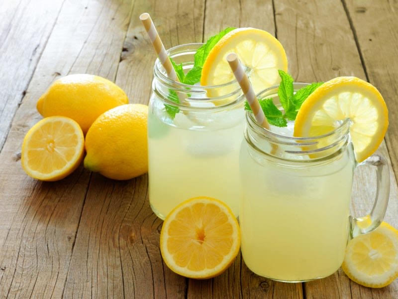
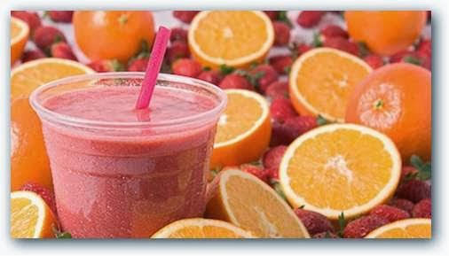

Limonada
La mejor bebida, rica y refrescante especialmente para un caluroso dia de verano.
Ingredientes
- 2/3 Limones
- 4 cucharadas de azucar
- 6 hojas de menta
- 100gr de jenjibre
- 1L de agua y hielos
Preparación
- Rallar y pelar los limones.
- Meter todos los ingredientes en la licuadora
- licuar bien y disfrutar!
Licuado de frutilla y durazno
Esta es otra bebida refrescante y tropical para cualquier momento.
Ingredientes
- c/n de frutillas enteras
- c/n de duraznos en mitades
- c/n de azúcar
- agua
- hielo
Preparación
- En la licuadora coloca todos los ingredientes, y licuar despacio hasta que el hielo se triture. Listo.